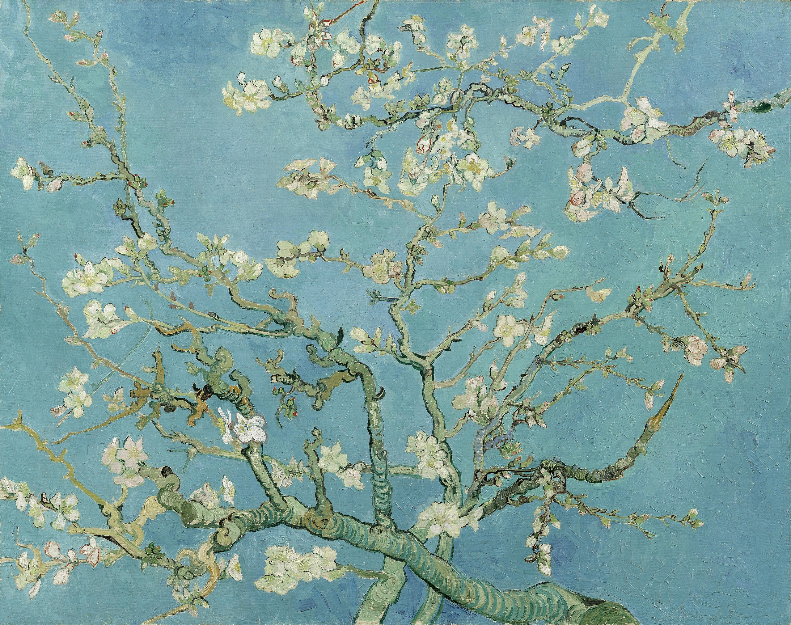
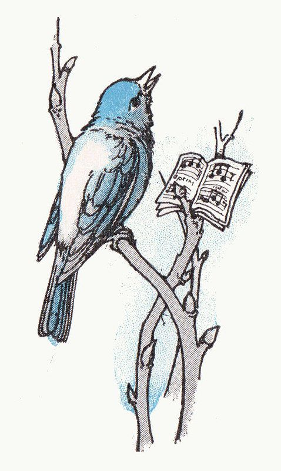

My friends are smart and talented. I am just… me. Here is why that might actually be a good thing.
If you walked into my classroom right now, you would notice the "star" students immediately. They are the ones the teachers smile at. They are the ones who get their papers held up as examples of perfection.
Then, there is me. I am the student sitting in the middle row. My hand isn't raised high. My homework is… fine. It’s not a masterpiece, it’s just done. For a long time, I wondered if I was falling behind. Why didn't I have that one amazing special talent that made everyone gasp?
But recently, I realized something important. While some of my friends are busy carrying the heavy weight of expectations, I am doing something they can't do: I am quietly enjoying my life.

"The freedom of being average allows for the beauty of experimentation."
Let me introduce you to my group. First, there is my artist friend. She is actually really good at drawing — way better than me — but she doesn't let it stress her out. We are kind of a team. We sit together, joking around and making fun of things, whispering our motto: "We listen and we don't judge" (even though we are totally judging, just a little bit).
But then, there is our other friend, the "English Dictionary." She is incredible at English. Her grammar is perfect, and she knows words I’ve never even heard of. But honestly? I feel bad for her sometimes.
When the teacher asks a really difficult question and the whole class is silent, everyone — including the teacher — automatically stares at her. The pressure is always on her to save the class. If I say a word wrong, nobody cares. But if she says a word wrong, everyone looks shocked.
Do you see the pattern? When you are labeled "The Best," you lose the freedom to make mistakes. You are standing on a pedestal, and the only place to go is down. This is where I come in. I am not the best speaker; sometimes I stutter. I am not the Math Whiz. I am not the Human Calculator.
And because of that, I am free. When I draw a picture, nobody cares if it looks weird. I can draw a purple cow if I want to! I do it because it’s funny, not because the teacher is grading my soul.
Being "average" means the world allows you to experiment. It allows you to be a beginner. It allows you to have a bad day without anyone making a big deal out of it. So, this is my new website. It is not a place for perfection. It is not a place where I will show you my trophies, because I don't have many.
Instead, this website is for the rest of us. It is for the students who try hard but don't always get the A. My friends might be the "stars" of the school, but I have realized that being in the audience is actually pretty fun.